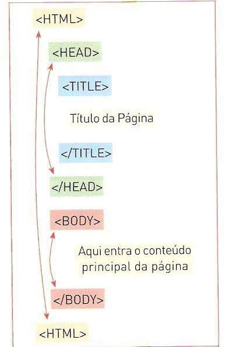
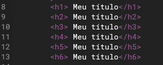
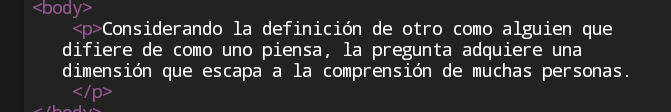
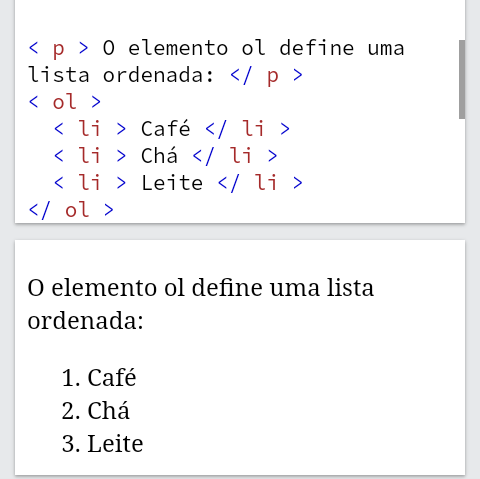
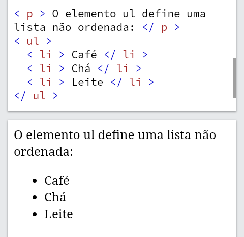
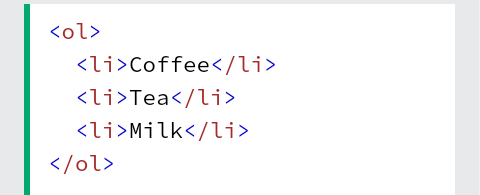
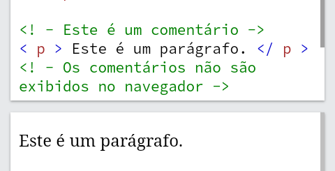

O HTML possui uma estrutura que é composta por tags. As tags possuem funções diferentes entre si, cada uma faz algo específico dentro do código. A seguir está a estrutura básica do HTML:
A tag Esa define o tamanho do seu título da sua página, tendo variação em h1, h2, h3, h4, h5, h6. Sendo que h1 é o maior e h6 o menor.
Cria paragrafos.
Cria uma espécie lista ordenada, ou seja, coloca números antes das palavras.
Cria um outro tipo de lista, só que com adição ao número de números
Essa tag é usada para definir a linha na lista. Ela é usada junto com como tags ol ou ul
Os comentários são usados para definir ou comentar algo no código sem aparecer no navegador, somente no código fonte. Isso ajuda para que outras pessoas possam compreender o que foi usado ou o porque foi usado tal parte do código.
